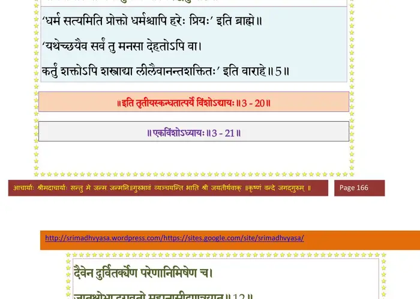
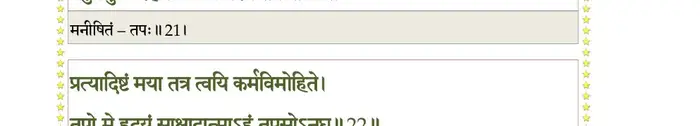

स्कन्ध 3 · अध्याय 20
श्लोक १
मैत्रेय उवाच–
अवधार्य विरिञ्चस्य निर्व्यलीकमृतं वचः ।
प््राहस्य प््रोमगर्भेण तदपाङ्गेन सोऽग्रहीत्।। १ ।।
अवधार्य विरिञ्चस्य निर्व्यलीकमृतं वचः ।
प््राहस्य प््रोमगर्भेण तदपाङ्गेन सोऽग्रहीत्।। १ ।।
श्लोक २
ततः सपत्नं मुखतश्चरन्तमकुतोभयम् ।
जघानोत्पत्य गदया हनावसुरमक्षतः।। २ ।।
जघानोत्पत्य गदया हनावसुरमक्षतः।। २ ।।
श्लोक ३
सा हता तेन गदया विहिता भगवत्करात् ।
विघूर्णिता भृशं रेजे तदद्भुतमिवाभवत्।। ३ ।।
विघूर्णिता भृशं रेजे तदद्भुतमिवाभवत्।। ३ ।।
श्लोक ४
स तदा लब्धवीर्योऽपि न बबाधे निरायुधम् ।
मानयन् स मृधे धर्मं विश्वक्सेनं प््राकोपयन्।। ४ ।।
मानयन् स मृधे धर्मं विश्वक्सेनं प््राकोपयन्।। ४ ।।
श्लोक ५
गदायामपविद्धायां हाहाकारे च निर्गते ।
मानयामास तं धर्मं सुनाभं चास्मरद् विभुः।। ५ ।।
मानयामास तं धर्मं सुनाभं चास्मरद् विभुः।। ५ ।।
भागवततात्पर्यनिर्णय

श्लोक ६
तं व्यग्रचक्रं दितिपुत्राधमेन स्वपार्षदमुख्येन विषज्जमानम् ।
चित्रा वाचस्तद्विदां खेचराणां तत्र स्मासन् स्वस्ति तेऽमुं जहीति।। ६ ।।
चित्रा वाचस्तद्विदां खेचराणां तत्र स्मासन् स्वस्ति तेऽमुं जहीति।। ६ ।।
श्लोक ७
स तन्निशम्यात्तरथाङ्गमग्रतो व्यवस्थितं पद्मपलाशलोचनम् ।
विलोक्य चामर्षपरिप्लुतेन्द्रियो रुषा स्वदन्तच्छदमादशच्छ्वसन्।।७।।
विलोक्य चामर्षपरिप्लुतेन्द्रियो रुषा स्वदन्तच्छदमादशच्छ्वसन्।।७।।
श्लोक ८
करालदंष्ट्रश्चक्षुर्भ्यां संचक्षाणो दहन्निव ।
अभिद्रुत्य स्वगदया हतोऽसीत्यहनद्धरिम्।। ८ ।।
अभिद्रुत्य स्वगदया हतोऽसीत्यहनद्धरिम्।। ८ ।।
श्लोक ९
पदा सव्येन तां साधो भगवान् यज्ञसूकरः ।
लीलया मिषतः शत्रोः प््र•हरद् वातरंहसा।। ९ ।।
लीलया मिषतः शत्रोः प््र•हरद् वातरंहसा।। ९ ।।
श्लोक १०
आह चायुधमादत्स्व घटस्व त्वं जिगीषसि ।
इत्युक्तः स तया भूयस्ताडयन् व्यनदद् भृशम्।। १० ।।
इत्युक्तः स तया भूयस्ताडयन् व्यनदद् भृशम्।। १० ।।
श्लोक ११
तां स आपततीं वीक्ष्य भगवान् समवस्थितः ।
जग्राह लीलया प््र•प्तां गरुत्मानिव पन्नगीम्।। ११ ।।
जग्राह लीलया प््र•प्तां गरुत्मानिव पन्नगीम्।। ११ ।।
श्लोक १२
स्वपौरुषे प््रातिहते हतमानो महासुरः ।
नैच्छद् गदां दीयमानां हरिणा विगतप््राभः।। १२ ।।
नैच्छद् गदां दीयमानां हरिणा विगतप््राभः।। १२ ।।
श्लोक १३
जग्राह त्रिशिखं शूलं ज्वलितं ज्वलनापमम् ।
यज्ञाय धृतरूपाय विप््र•याभिचरन् यथा।। १३ ।।
यज्ञाय धृतरूपाय विप््र•याभिचरन् यथा।। १३ ।।
श्लोक १४
तदौजसा दैत्यमहाभटार्पितं चकासदन्तः ख उदीर्णदीधिति ।
चक्रेण चिच्छेद निशातनेमिना हरिर्यथा तार्क्ष्यपतत्रमुज्झितम्।।१४।।
चक्रेण चिच्छेद निशातनेमिना हरिर्यथा तार्क्ष्यपतत्रमुज्झितम्।।१४।।
श्लोक १५
वृक्णे च शूले बहुधारिणा हरेः प््रात्येत्य विस्तीर्णमुरो विभूतिमत् ।
प््रावृद्धरोषः सकठोरमुष्टिना नदन् प््राहृत्यान्तरधीयतासुरः।। १५ ।।
प््रावृद्धरोषः सकठोरमुष्टिना नदन् प््राहृत्यान्तरधीयतासुरः।। १५ ।।
श्लोक १६
तेनेत्थमाहते क्षत्तर्भगवानादिसूकरः ।
नाकम्पत मनाग् वापि स्रजाहत इव द्विपः।। १६ ।।
नाकम्पत मनाग् वापि स्रजाहत इव द्विपः।। १६ ।।
श्लोक १७
अथोरुधाऽसृजन्मायां योगमायेश्वरे हरौ ।
यां विलोक्य प््राजास्त्रस्ता मेनिरेऽस्योपसंयमम् ।। १७ ।।
यां विलोक्य प््राजास्त्रस्ता मेनिरेऽस्योपसंयमम् ।। १७ ।।
श्लोक १८
प््राववुर्वायवश्चण्डास्तमः पांसवमीरयन् ।
दिग्भ्यो निपेतुर्ग्रावाणः क्षेपणैः प््राहिता इव।। १८ ।।
दिग्भ्यो निपेतुर्ग्रावाणः क्षेपणैः प््राहिता इव।। १८ ।।
श्लोक १९
द्यौर्नष्टभगणाऽभ्रौघैः सविद्युत्स्तनयित्नुभिः ।
वर्षद्भिः पूयकेशासृग्विण्मूत्रास्थीनि चासकृत्।। १९ ।।
वर्षद्भिः पूयकेशासृग्विण्मूत्रास्थीनि चासकृत्।। १९ ।।
श्लोक २०
गिरयः प््रात्यदृश्यन्त नानायुधमुचोऽनघ ।
दिग्वाससो यातुधान्यः शूलिन्यो मुक्तमूर्धजाः।। २० ।।
दिग्वाससो यातुधान्यः शूलिन्यो मुक्तमूर्धजाः।। २० ।।
श्लोक २१
बहुभिर्यक्षरक्षोभिः पत्त्यश्वरथकुञ्जरैः ।
आततायिभिरुत्सृष्टा हिंस्रा वाचोऽतिवैशसाः।। २१ ।।
आततायिभिरुत्सृष्टा हिंस्रा वाचोऽतिवैशसाः।। २१ ।।
श्लोक २२
प््र•दुष्कृतानां मायानामासुरीणां विनाशनम् ।
सुदर्शनास्त्रं भगवान् प््र•युङ्क्त च ततस्त्रिपात्।। २२ ।।
सुदर्शनास्त्रं भगवान् प््र•युङ्क्त च ततस्त्रिपात्।। २२ ।।
श्लोक २३
तदा दितेः समभवत् सहसा हृदि वेपथुः ।
स्मरन्त्या भर्तुरादेशं स्तनाच्चासृक् प््रासुस्रुवे।। २३ ।।
स्मरन्त्या भर्तुरादेशं स्तनाच्चासृक् प््रासुस्रुवे।। २३ ।।
श्लोक २४
व्युदस्तासु स्वमायासु भूयश्चाव्रज्य केशवम् ।
उपोपगूहमानोऽमुं ददृशेऽवस्थितं बहिः।। २४ ।।
उपोपगूहमानोऽमुं ददृशेऽवस्थितं बहिः।। २४ ।।
श्लोक २५
तं मुष्टिभिर्विनिघ्नन्तं वज्रसारैरधोक्षजः ।
करेण कर्णमूलेऽहन् यथा त्वाष्ट्रं मरुत्पतिः।। २५ ।।
करेण कर्णमूलेऽहन् यथा त्वाष्ट्रं मरुत्पतिः।। २५ ।।
श्लोक २७
समाहतो विश्वसृजा ह्यवज्ञया परिभ्रमद्गात्र उदस्तलोचनः ।
विकीर्णबाह्वङ्घ्रिशिरोधरोऽपतद् यथा नगेन्द्रो लुलितो नभस्वता ।।२६
क्षितौ शयानं तमकुण्ठवर्चसं करालदंष्ट्रं परिदष्टदच्छदम् ।
अजादयो वीक्ष्य शशंसुरागता अहो इमां को नु लभेत संस्थितिम्।। २७ ।।
विकीर्णबाह्वङ्घ्रिशिरोधरोऽपतद् यथा नगेन्द्रो लुलितो नभस्वता ।।२६
क्षितौ शयानं तमकुण्ठवर्चसं करालदंष्ट्रं परिदष्टदच्छदम् ।
अजादयो वीक्ष्य शशंसुरागता अहो इमां को नु लभेत संस्थितिम्।। २७ ।।
श्लोक २८
यं योगिनो योगसमाधिना हरेर्ध्यायन्ति लिङ्गादसतो मुमुक्षवः ।
तस्यैष दैत्यऋषभः पदा हतो मुखं प््रापश्यंस्तनुमुत्ससर्ज ह।। २८ ।।
तस्यैष दैत्यऋषभः पदा हतो मुखं प््रापश्यंस्तनुमुत्ससर्ज ह।। २८ ।।
श्लोक २९
एतौ हि पार्षदावस्य शापाद् यातावसद्गतिम् ।
पुनः कतिपयैः स्थानं प््रापत्स्येते ह जन्मनि।। २९ ।।
पुनः कतिपयैः स्थानं प््रापत्स्येते ह जन्मनि।। २९ ।।
श्लोक ३१
देवा ऊचुः–
नमो नमस्तेऽखिलयज्ञतन्तवे स्थितौ गृहीतामलसत्त्वमूर्तये ।
दिष्ट्या हतोऽयं जगतामरुन्तुदस्त्वत्पादभक्त्या वयमीश निर्वृताः।।३०
मैत्रेय उवाच–
एवं हिरण्याक्षमसह्यविक्रमं संसादयित्वा हरिरादिसूकरः ।
जगाम लोकं स्वमखण्डितोत्सवं समीडितः पुष्करविष्टरादिभिः।।३१।।
नमो नमस्तेऽखिलयज्ञतन्तवे स्थितौ गृहीतामलसत्त्वमूर्तये ।
दिष्ट्या हतोऽयं जगतामरुन्तुदस्त्वत्पादभक्त्या वयमीश निर्वृताः।।३०
मैत्रेय उवाच–
एवं हिरण्याक्षमसह्यविक्रमं संसादयित्वा हरिरादिसूकरः ।
जगाम लोकं स्वमखण्डितोत्सवं समीडितः पुष्करविष्टरादिभिः।।३१।।
श्लोक ३२
मया यथाऽनूक्तमथादितो हरेः कृतावतारस्य सुमित्र चेष्टितम् ।
यथा हिरण्याक्ष उदारविक्रमो महामृधे क्रीडनवन्निराकृतः।। ३२ ।।
यथा हिरण्याक्ष उदारविक्रमो महामृधे क्रीडनवन्निराकृतः।। ३२ ।।
श्लोक ३३
शुक उवाच–
इति कौशारवाख्यातामाश्रुत्य भगवत्कथाम् ।
क्षत्ताऽऽनन्दं परं लेभे महाभागवतो नृप।। ३३ ।।
इति कौशारवाख्यातामाश्रुत्य भगवत्कथाम् ।
क्षत्ताऽऽनन्दं परं लेभे महाभागवतो नृप।। ३३ ।।
श्लोक ३४
अन्येषां पुण्यश्लोकानामुद्दामयशसां सताम् ।
उपश्रुत्य भवेन्मोदः श्रीवत्साङ्कस्य किं पुनः।। ३४ ।।
उपश्रुत्य भवेन्मोदः श्रीवत्साङ्कस्य किं पुनः।। ३४ ।।
भागवततात्पर्यनिर्णय

श्लोक ३५
यो गजेन्द्रं झषग्रस्तं ध्यायन्तं चरणाम्बुजम् ।
क्रोशन्तीनां करेणूनां कृच्छ्रतोऽमोचयद् द्रुतम्।। ३५ ।।
क्रोशन्तीनां करेणूनां कृच्छ्रतोऽमोचयद् द्रुतम्।। ३५ ।।
श्लोक ३६
तं सुखाराध्यमृजुभिरनन्यशरणैर्नृभिः ।
कृतज्ञः को न सेवेत दुराराध्यमसाधुभिः।। ३६ ।।
कृतज्ञः को न सेवेत दुराराध्यमसाधुभिः।। ३६ ।।
।। इति श्रीमद्भागवते तृतीयस्कन्धे विंशोऽध्यायः ।।